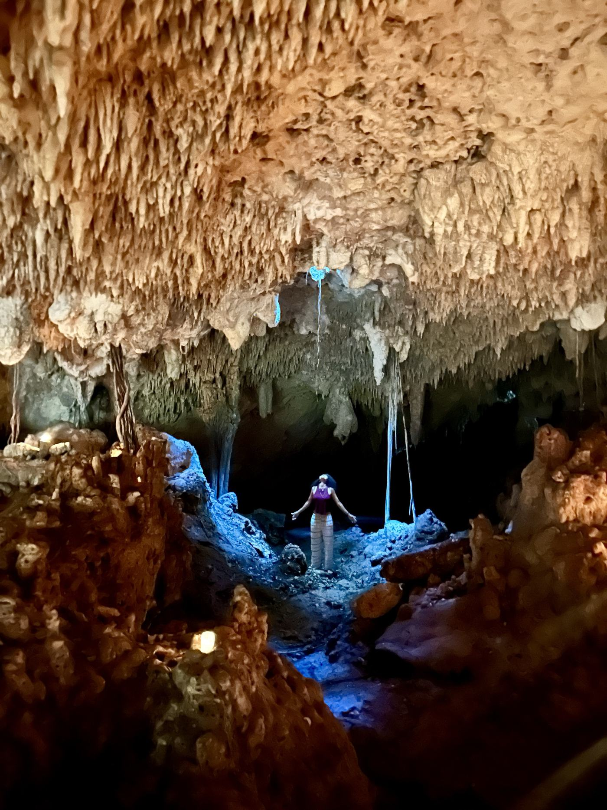

Intuitive Soul Guidance
Guía Intuitiva del Alma
Intuitive Soul
Guide Session
Sesión de Guía
Intuitiva del Alma
A private space to remember what you already know.
Un espacio privado para recordar lo que ya sabes.
Reserve Your Space Reserva tu EspacioYou already carry the wisdom you're searching for. This is a space to remember it.
Ya llevas contigo la sabiduría que buscas. Este es un espacio para recordarla.
Cyndiii Deusa is an intuitive soul guide, energy reader, sacred poet and reflective speaker devoted to helping people reconnect with their inner truth, self-awareness, emotional clarity and embodied self-love.
Through grounded spiritual guidance, intuitive reflection, sacred conversation and emotionally attuned presence, she creates a space where you feel deeply seen, safe to explore yourself honestly, and supported in reconnecting with your own inner wisdom.
Her intention is not to position herself as someone who "has all the answers," but as an intuitive guide who helps you reconnect with the wisdom, clarity and truth already living within you.
Cyndiii Deusa es una guía intuitiva del alma, lectora de energía, poeta sagrada y oradora reflexiva, dedicada a ayudar a las personas a reconectar con su verdad interior, su autoconciencia, su claridad emocional y su amor propio encarnado.
A través de una guía espiritual arraigada, reflexión intuitiva, conversación sagrada y una presencia emocionalmente sintonizada, ella crea un espacio donde te sientes profundamente vista, en un lugar seguro para explorarte con honestidad, y acompañada mientras reconectas con tu propia sabiduría interior.
Su intención no es posicionarse como alguien que "tiene todas las respuestas", sino como una guía intuitiva que te ayuda a reconectar con la sabiduría, la claridad y la verdad que ya viven dentro de ti.
Session experience
La experiencia de la sesión
Those drawn to this guidance often seek support around…
Quienes se sienten llamadas a esta guía suelen buscar apoyo con…
- Life transitions
- Emotional overwhelm
- Relationship challenges
- Heartbreak & grief
- Self-worth & confidence
- Spiritual growth & awakening
- Reconnecting to creativity & purpose
- Finding clarity during change
- Transiciones de vida
- Sobrecarga emocional
- Desafíos en las relaciones
- Duelo y desamor
- Autoestima y confianza
- Crecimiento y despertar espiritual
- Reconectar con la creatividad y el propósito
- Encontrar claridad durante el cambio
How she guides
Cómo guía
The four strands of her energetic transmission.
Las cuatro vertientes de su transmisión energética.
-
01
Oracular Vision
She speaks through patterns, symbols, intuitive insight and reflective awareness that help you recognize truths that have long existed within you.
-
02
Energetic Presence
Her presence communicates beyond words alone, creating experiences that are felt emotionally, energetically and internally.
-
03
Shadow Illumination
She gently supports you in exploring hidden emotions, unconscious patterns, shame, avoidance and emotional suppression — with compassion and honesty.
-
04
Embodied Mysticism
Grounded yet spiritually attuned, her approach brings spiritual reflection into real human experience through warmth, emotional intelligence, honesty and depth.
-
01
Visión Oracular
Habla a través de patrones, símbolos, percepción intuitiva y conciencia reflexiva que te ayudan a reconocer verdades que ya existían dentro de ti.
-
02
Presencia Energética
Su presencia comunica más allá de las palabras, creando experiencias que se sienten emocional, energética e internamente.
-
03
Iluminación de la Sombra
Te acompaña suavemente a explorar emociones ocultas, patrones inconscientes, vergüenza, evasión y supresión emocional — con compasión y honestidad.
-
04
Misticismo Encarnado
Arraigada y a la vez espiritualmente sintonizada, su enfoque lleva la reflexión espiritual a la experiencia humana real a través de calidez, inteligencia emocional, honestidad y profundidad.

Included in every session
Incluido en cada sesión
Reflection through poetry.
Reflexión a través de la poesía.
At the close of your session, you'll be invited to hold a book of her own poetry to your heart while setting an intention. You'll then open to a page — and receive the poem that reveals itself as a reflection for your journey.
Al cerrar tu sesión, se te invitará a sostener un libro de su propia poesía contra tu corazón mientras estableces una intención. Después abrirás una página — y recibirás el poema que se revele como reflejo de tu camino.
A space for reflection, clarity, perspective & reconnection.
Un espacio para la reflexión, la claridad, la perspectiva y la reconexión.
Each session is intuitively guided and designed to support you in exploring challenges, transitions, questions, relationships, purpose, self-discovery and the next steps on your path. Sessions may include:
Cada sesión es guiada intuitivamente y está diseñada para acompañarte en la exploración de desafíos, transiciones, preguntas, relaciones, propósito, autodescubrimiento y los siguientes pasos en tu camino. Puede incluir:
- Intuitive Guidance
- Reflective Conversation
- Perspective & Clarity
- Spiritual Reflection
- Animal Spirit Message
- Reflection Through Poetry
- Integration Guidance
- Guía Intuitiva
- Conversación Reflexiva
- Perspectiva y Claridad
- Reflexión Espiritual
- Mensaje de Animal de Poder
- Reflexión a través de la Poesía
- Guía para la Integración
Intuitive Soul Guide Session
Sesión de Guía Intuitiva del Alma
Investment — to be set
Inversión — por definir
Reserve Your Space Reserva tu EspacioApproach & values
Enfoque y valores
Transformation happens not through force, but through honest presence, self-remembrance, emotional awareness & reconnecting to your own inner guidance.
La transformación no ocurre por la fuerza, sino a través de la presencia honesta, el auto-recuerdo, la conciencia emocional y la reconexión con tu propia guía interior.
Closing reflection
Reflexión final
The love, clarity, peace & truth we search for externally are often the very things waiting to be remembered within ourselves.
El amor, la claridad, la paz y la verdad que buscamos externamente son, con frecuencia, aquello mismo que espera ser recordado dentro de nosotros.
60 minutes · Virtual or in person, Tulum
60 minutos · Virtual o presencial, Tulum
Reserve Your Space Reserva tu Espacio Prefer email? soul@iiiportal.com ¿Prefieres email? soul@iiiportal.com